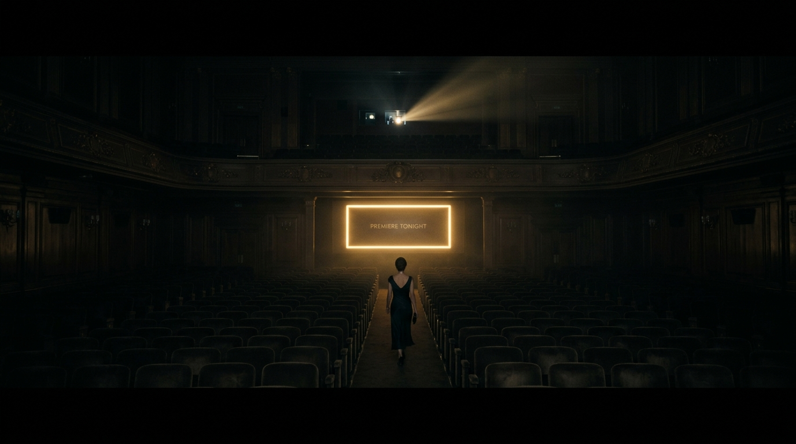
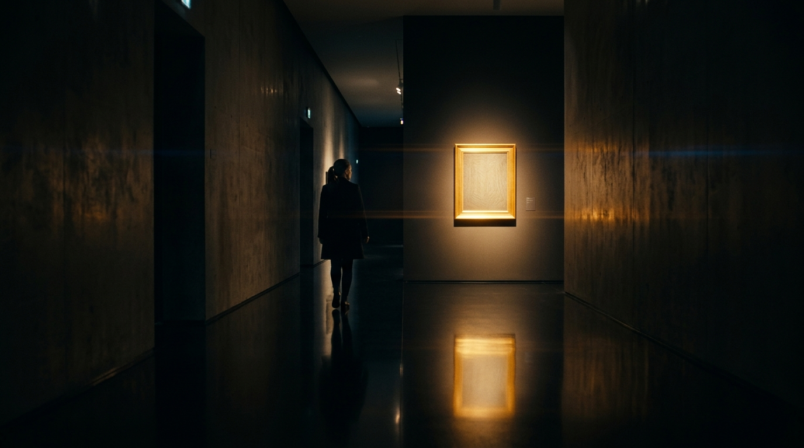

PORTFOLIO REIMAGINED — 2026
Framed in Widescreen
A Portfolio Goes to the Movies
CENTRAL THESIS & PHILOSOPHY
The Making of a Professional, Cinematic Portfolio: from shouting flea market to an unhurried, letterspaced theater hall.
"The screen went black for three full seconds — and I walked into it."
My portfolio used to be a flea market. Twelve projects shoulder to shoulder, thumbnails shouting over each other, a neon gradient banner promising "CREATIVE PASSION" in a font that belonged on a dentist's billboard. Everything was there, and therefore nothing was seen. Visitors scrolled like commuters: eyes forward, touch nothing, escape at the next click.
Then one night I watched a film I had seen a dozen times before, and I finally understood what it was doing to me. The screen went black for three full seconds before the first image appeared. The titles arrived one at a time, small and certain, letterspaced like footsteps in an empty hall. Nobody had shouted at me. Nobody had shown me everything at once. The film had simply made room, and I walked into it.
I wanted my portfolio to do that. I wanted strangers to arrive as visitors and leave as an audience.

QUIET. SINGLE GOLD. PURPOSE.
"Where there had been ten competing accents, now there was one, a single gold, used the way a film uses its score."
DRAG SLIDER TO REVEAL THE TRANSFORMATION
Dim the Lights
Cinema begins with darkness. So I killed the white.
The background of every page went to near-black, not the black of a void but the black of a theater before the trailer ends, the kind that feels warm because a thousand screens have made it familiar. My work, once marooned on white, now floated like illuminated cells, each image a lantern in a dark corridor. Colors deepened. Edges sharpened. A photograph I had considered ordinary for two years suddenly looked like a still from a film I wished I had made.

"Darkness is not a color; it is a courtesy. It tells the visitor: we turn the lights down for you, so the work can be the only thing that glows."
I stripped the gradients, muted the buttons, retired the rainbow. Where there had been ten competing accents, now there was one, a single gold, used the way a film uses its score: sparingly, and only where it matters.
Every Frame a Sentence
A film editor will tell you that cutting is the true authorship. I began to cut.
Twenty-two projects became nine. It felt like surgery; it read like mercy. Each project got its own full-width frame, its own entrance, its own breathing room, the way a director gives a scene space to land before the next one begins. I stopped asking how much I could show and started asking how long this shot should hold.
FRAMED IN WIDESCREEN
[ THREE WORDS. SURROUNDED BY NOTHING. ]
Type became my cinematography. Titles arrived in a quiet serif, tracked wide like the opening credits of an old epic. Body copy stepped aside, small and legible, a narrator who knows his place. Captions settled at the lower third of each image, the way subtitles do, present when needed and invisible when not. On the page about my brand film, the headline sat alone in the center of the black: three words, surrounded by nothing.
"It took more confidence to delete than it had ever taken to add."
The Camera Moves
A static portfolio is a slideshow. A cinematic one is a camera.
I made the page move the way a good dolly does: slow, motivated, unhurried. Images dissolved in as you scrolled, each rising a few centimeters like a curtain, never bouncing, never begging. Hovering over a frame lit it gently, a flashlight passing over a gallery wall at midnight. Between sections I left stretches of pure black, long enough to feel like a breath between scenes.
Even the loading screen got a scene of its own. The name of my studio fades in from black like the first title card of the night, one line, nothing else. Two seconds of waiting became two seconds of theater. People stopped complaining about the wait, because they had stopped noticing it was one.
The Premiere
The first stranger to see the new site was a creative director I had been chasing for months. She stayed nine minutes. She wrote to me the same afternoon, and the first line of her email was not about any single project. It said:
EXECUTIVE FEEDBACK // 14:32 HRS
"It feels like you already know who you are."
That is what professionalism is, I think: not polish, not expensive fonts, but the quiet of someone who has stopped apologizing. The cinematic portfolio does not shout its skills; it screens them. It does not list what I can do; it runs the trailer and lets the audience decide to stay for the feature.
// FINALE //
Coda: Roll Film
The old portfolio was a room where I kept my things. The new one is a dark hall where my work premieres every night at eight. Same projects. Same designer. Different lighting.
Framed in Widescreen.
Somewhere tonight a stranger will open it, and the screen will go black for three full seconds, and they will not click away. They will wait for the first frame, because everything they have already seen has told them the wait is worth it.
I turn the lights down.
The room goes quiet.
Roll film.
// PRODUCTION CREDITS //
FRAMED IN WIDESCREEN
RELEASED SEPTEMBER 30, 2026
WRITTEN & DIRECTED BY
Aditya Soni
CINEMATOGRAPHY RATIO
2.39:1 Anamorphic Scope
TYPOGRAPHY
Cinzel & Newsreader
SYSTEM ARCHITECTURE
Full-Stack & WebGL 3D
SOUND DESIGN
Web Audio Subwoofer Tone
FEATURE SELECTIONS
9 Curated Case Studies
NOW SCREENING ACROSS THE ECOSYSTEM